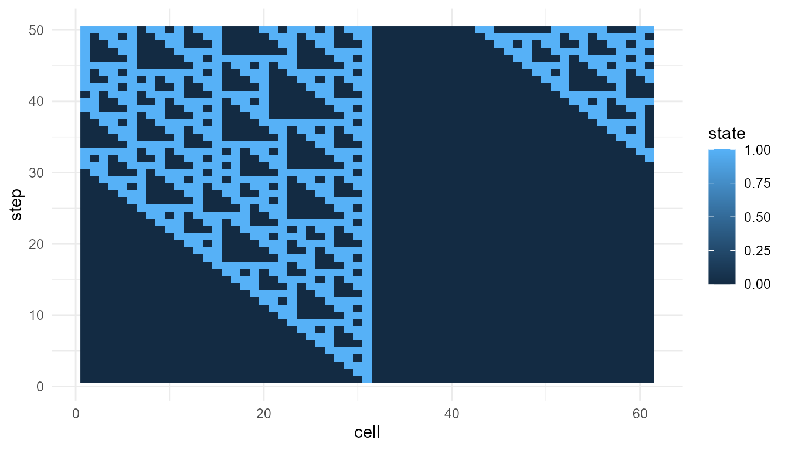
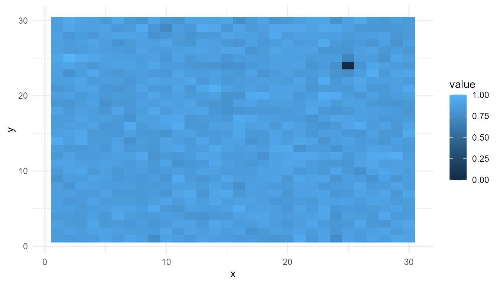
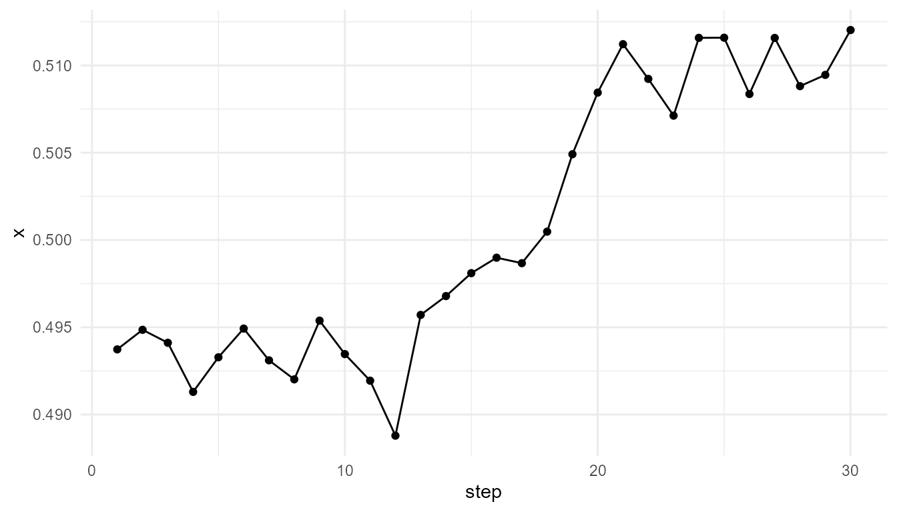

Comparing Emergence Models Tutorial
Source:vignettes/comparing-models-tutorial.Rmd
comparing-models-tutorial.RmdPurpose
This tutorial compares several emergence models included in
emergenceModelR. The goal is to understand how different
local rules and interaction structures produce different forms of
system-level pattern.
This is a practical tutorial. It focuses on how to run the models, inspect their outputs, compare summary metrics, and interpret results carefully.
The package includes several pathways to emergence:
| Model type | Main mechanism | Core function |
|---|---|---|
| Cellular automata | Local update rules | simulate_cellular_automata() |
| Self-organization | Feedback and diffusion | simulate_self_organization() |
| Agent interactions | Local movement and alignment | simulate_agent_interactions() |
| Network growth | Attachment and connectivity | simulate_network_growth() |
These models are not meant to represent the same system. They represent different ways that system-level structure can arise from local dynamics.
Learning goals
By the end of this tutorial, you should be able to:
- run one example from each model family;
- inspect the output structure of each model;
- visualize selected outputs;
- compare emergence-oriented summary metrics;
- compare parameter settings within the same model family;
- explain why cross-model comparisons require caution;
- choose an appropriate model for a specific teaching or research question.
Why compare emergence models?
Emergence is not a single mechanism. A cellular automaton, a self-organizing grid, an agent-based system, and a growing network can all produce emergent patterns, but they do so in different ways.
Comparing models helps clarify:
- what the basic units are;
- what rules the units follow;
- how interactions occur;
- what kind of global pattern appears;
- what kind of output the model produces;
- how the output should be interpreted.
This is useful because the word emergence can become vague if different mechanisms are not distinguished.
A comparison workflow
A good comparison workflow is:
- Run each model.
- Inspect the output structure.
- Visualize the main pattern.
- Compute simple summary metrics.
- Compare models conceptually.
- Compare parameters within the same model family.
- Interpret results cautiously.
This tutorial follows that workflow.
Run several models
First, run one example from each major model family.
ca <- simulate_cellular_automata(
rule = 110,
n_cells = 61,
steps = 50
)
so <- simulate_self_organization(
grid_size = 30,
steps = 30,
diffusion = 0.20,
feedback = 0.60,
seed = 5
)
agents <- simulate_agent_interactions(
n_agents = 50,
steps = 30,
interaction_radius = 0.15,
alignment = 0.05,
seed = 5
)
network <- simulate_network_growth(
n_nodes = 60,
m = 2,
mode = "preferential",
seed = 5
)Inspect the outputs
Each model produces a different kind of output.
head(ca)
#> step cell state
#> 1 1 1 0
#> 2 1 2 0
#> 3 1 3 0
#> 4 1 4 0
#> 5 1 5 0
#> 6 1 6 0
head(so)
#> step x y value
#> 1 1 1 1 0.2002145
#> 2 1 2 1 0.6852186
#> 3 1 3 1 0.9168758
#> 4 1 4 1 0.2843995
#> 5 1 5 1 0.1046501
#> 6 1 6 1 0.7010575
head(agents)
#> step agent x y
#> 1 1 A1 0.2002145 0.3845769
#> 2 1 A2 0.6852186 0.5662727
#> 3 1 A3 0.9168758 0.9219906
#> 4 1 A4 0.2843995 0.9758776
#> 5 1 A5 0.1046501 0.9330338
#> 6 1 A6 0.7010575 0.3811627
head(network$degree_history)
#> step node degree
#> 1 3 N1 2
#> 2 3 N2 2
#> 3 3 N3 2
#> 4 4 N1 3
#> 5 4 N2 3
#> 6 4 N3 2This is important. The models should not be compared as if they all produce the same type of object.
| Model | Output structure | Main value column |
|---|---|---|
| Cellular automata | Cell states across time | state |
| Self-organization | Grid values across time | value |
| Agent interactions | Agent positions across time |
x, y
|
| Network growth | Degree history and edge list | degree |
The value column matters because measure_emergence()
summarizes a selected variable. If the selected variable means different
things in different models, the metrics must be interpreted
differently.
Visualize cellular automata
Cellular automata show how simple local update rules can generate global space-time patterns.
plot_emergence_sim(
ca,
x = "cell",
y = "step",
value = "state",
type = "raster"
)
Interpret the cellular automaton
In this model, each cell updates based on a local rule. No cell knows the global pattern. The system-level structure appears through repeated local updating.
This model emphasizes:
- local rules;
- deterministic updating;
- space-time pattern formation;
- complexity from simple components.
Visualize self-organization
For the self-organization model, examine the final spatial pattern.
so_final <- subset(
so,
step == max(step)
)
plot_emergence_sim(
so_final,
x = "x",
y = "y",
value = "value",
type = "raster"
)
Interpret the self-organization model
This model emphasizes feedback and diffusion. Feedback can amplify local differences, while diffusion spreads or smooths variation.
The emergent pattern is spatial. It is not generated by a central designer. It appears through repeated local updating across the grid.
This model emphasizes:
- spatial organization;
- local feedback;
- diffusion;
- pattern formation.
Visualize agent interactions
For the agent model, one useful summary is the group center over time.
center <- aggregate(
cbind(x, y) ~ step,
data = agents,
FUN = mean
)
head(center)
#> step x y
#> 1 1 0.4937344 0.5431391
#> 2 2 0.4948551 0.5415049
#> 3 3 0.4941114 0.5441503
#> 4 4 0.4912985 0.5419583
#> 5 5 0.4932812 0.5446167
#> 6 6 0.4949252 0.5441528
plot_emergence_sim(
center,
x = "step",
y = "x",
type = "line"
)
Interpret the agent model
The agent model emphasizes local interaction among moving individuals. Each agent follows simple rules, but the group can show collective behavior.
This model emphasizes:
- individual agents;
- local neighborhoods;
- movement;
- alignment;
- group-level dynamics.
The group center is only one summary. It does not capture all collective behavior, but it gives a simple way to observe group-level movement.
Inspect network growth
For the network model, a simple summary is the final degree distribution.
network_final <- subset(
network$degree_history,
step == max(step)
)
summary(network_final$degree)
#> Min. 1st Qu. Median Mean 3rd Qu. Max.
#> 2.0 2.0 3.0 3.9 5.0 15.0
data.frame(
mean_degree = mean(network_final$degree),
max_degree = max(network_final$degree),
sd_degree = stats::sd(network_final$degree)
)
#> mean_degree max_degree sd_degree
#> 1 3.9 15 2.778245Interpret the network model
The network model emphasizes relational structure. Nodes connect to other nodes according to an attachment rule. In a preferential attachment model, already well-connected nodes are more likely to receive new links.
This model emphasizes:
- connectivity;
- network growth;
- hubs;
- degree distributions;
- cumulative advantage.
The degree summary helps identify whether some nodes became much more connected than others.
Compare summary metrics
The function measure_emergence() provides simple metrics
that can help compare simulation outputs.
metric_table <- rbind(
cellular_automata = measure_emergence(
ca,
value_col = "state",
time_col = "step"
),
self_organization = measure_emergence(
so,
value_col = "value",
time_col = "step"
),
agents_x_position = measure_emergence(
agents,
value_col = "x",
time_col = "step"
),
network_degree = measure_emergence(
network$degree_history,
value_col = "degree",
time_col = "step"
)
)
metric_table
#> n unique_states shannon_entropy mean_value sd_value
#> cellular_automata 3050 2 0.8047175 0.2459016 0.4306911
#> self_organization 27000 26944 14.7102361 0.8430290 0.1394870
#> agents_x_position 1500 1492 10.5344759 0.5006656 0.2850442
#> network_degree 1827 14 2.5637001 3.8095238 2.5560223
#> temporal_variability mean_absolute_change
#> cellular_automata 0.136154022 0.044161927
#> self_organization 0.095414407 0.023122286
#> agents_x_position 0.007826525 0.002248112
#> network_degree 0.359005647 0.033333333Interpreting the metrics
The metrics help summarize variation, diversity, or change. They are useful for comparison, but they should not be treated as complete definitions of emergence.
For example:
- high diversity may indicate many different states;
- high temporal change may indicate dynamic behavior;
- high variability may indicate uneven structure;
- low variability may indicate stable or uniform behavior.
However, the meaning of each metric depends on the model. Entropy in a cellular automaton is not the same as variation in agent positions or degree variation in a network.
A careful interpretation is:
These metrics summarize selected features of each model output.
An overstatement would be:
These metrics show which model is truly more emergent.
The first statement is appropriate. The second is too strong.
Compare mechanisms, not just numbers
A common mistake is to compare emergence models only by numerical scores. The more important comparison is conceptual.
| Model | Unit | Local rule | Emergent pattern |
|---|---|---|---|
| Cellular automata | Cell | Update from neighbors | Space-time pattern |
| Self-organization | Grid cell | Feedback and diffusion | Spatial structure |
| Agent interactions | Agent | Movement and alignment | Collective dynamics |
| Network growth | Node | Attachment rule | Network topology |
This table shows that each model represents a different pathway to emergence.
Within-model comparison: cellular automata rules
Metrics are most useful when comparing outputs from the same model family. The following example compares two cellular automaton rules.
ca_30 <- simulate_cellular_automata(
rule = 30,
n_cells = 61,
steps = 50
)
ca_110 <- simulate_cellular_automata(
rule = 110,
n_cells = 61,
steps = 50
)
rbind(
rule_30 = measure_emergence(
ca_30,
value_col = "state",
time_col = "step"
),
rule_110 = measure_emergence(
ca_110,
value_col = "state",
time_col = "step"
)
)
#> n unique_states shannon_entropy mean_value sd_value
#> rule_30 3050 2 0.9461644 0.3642623 0.4813016
#> rule_110 3050 2 0.8047175 0.2459016 0.4306911
#> temporal_variability mean_absolute_change
#> rule_30 0.1695683 0.07059217
#> rule_110 0.1361540 0.04416193Interpretation of cellular automata comparison
The two cellular automata use the same structure but different local rules. Any differences in the output are due to the rule, not to the number of cells or steps.
This illustrates a major lesson of emergence:
The rules of interaction matter as much as the components themselves.
Within-model comparison: self-organization parameters
Self-organization can be compared by changing feedback or diffusion while holding other settings constant.
low_feedback <- simulate_self_organization(
grid_size = 30,
steps = 30,
diffusion = 0.20,
feedback = 0.20,
seed = 5
)
high_feedback <- simulate_self_organization(
grid_size = 30,
steps = 30,
diffusion = 0.20,
feedback = 0.80,
seed = 5
)
rbind(
low_feedback = measure_emergence(
low_feedback,
value_col = "value",
time_col = "step"
),
high_feedback = measure_emergence(
high_feedback,
value_col = "value",
time_col = "step"
)
)
#> n unique_states shannon_entropy mean_value sd_value
#> low_feedback 27000 26944 14.71024 0.7523837 0.1625534
#> high_feedback 27000 26944 14.71024 0.8547248 0.1340823
#> temporal_variability mean_absolute_change
#> low_feedback 0.09333925 0.01853491
#> high_feedback 0.09204514 0.02424459Interpretation of self-organization comparison
Changing feedback changes how strongly local values reinforce themselves. This can affect spatial structure and variation.
This comparison is easier to interpret than comparing self-organization directly with a network model, because both outputs come from the same model family.
Within-model comparison: agent alignment
Agent-based emergence can be compared by changing the strength of alignment.
weak_alignment <- simulate_agent_interactions(
n_agents = 50,
steps = 30,
interaction_radius = 0.15,
alignment = 0.01,
seed = 5
)
strong_alignment <- simulate_agent_interactions(
n_agents = 50,
steps = 30,
interaction_radius = 0.15,
alignment = 0.15,
seed = 5
)
rbind(
weak_alignment_x = measure_emergence(
weak_alignment,
value_col = "x",
time_col = "step"
),
strong_alignment_x = measure_emergence(
strong_alignment,
value_col = "x",
time_col = "step"
)
)
#> n unique_states shannon_entropy mean_value sd_value
#> weak_alignment_x 1500 1477 10.48906 0.5006179 0.2892659
#> strong_alignment_x 1500 1500 10.55075 0.5030666 0.2712113
#> temporal_variability mean_absolute_change
#> weak_alignment_x 0.007466979 0.002267973
#> strong_alignment_x 0.008823747 0.002285213Interpretation of agent comparison
Alignment changes how strongly nearby agents influence one another. A stronger alignment setting may produce more coordinated movement, but the metrics should be interpreted together with plots or group-level summaries.
For agent models, a single coordinate such as x is only
one perspective on collective behavior.
Within-model comparison: random and preferential networks
Network emergence can be compared by changing the attachment rule.
pref_net <- simulate_network_growth(
n_nodes = 60,
m = 2,
mode = "preferential",
seed = 10
)
rand_net <- simulate_network_growth(
n_nodes = 60,
m = 2,
mode = "random",
seed = 10
)
pref_final <- subset(
pref_net$degree_history,
step == max(step)
)
rand_final <- subset(
rand_net$degree_history,
step == max(step)
)
data.frame(
model = c("preferential", "random"),
mean_degree = c(mean(pref_final$degree), mean(rand_final$degree)),
max_degree = c(max(pref_final$degree), max(rand_final$degree)),
sd_degree = c(stats::sd(pref_final$degree), stats::sd(rand_final$degree))
)
#> model mean_degree max_degree sd_degree
#> 1 preferential 3.9 17 3.128329
#> 2 random 3.9 11 2.160508Interpretation of network comparison
Preferential attachment may produce hubs because already well-connected nodes are more likely to receive new links. Random attachment usually produces a more even distribution of connections.
This demonstrates that global network structure can emerge from local attachment rules.
Cross-model comparison
After comparing within model families, you can compare across model families more cautiously.
cross_model_summary <- data.frame(
model = c(
"cellular automata",
"self-organization",
"agent interactions",
"network growth"
),
unit = c(
"cell",
"grid cell",
"agent",
"node"
),
main_rule = c(
"local state update",
"feedback and diffusion",
"movement and alignment",
"attachment rule"
),
main_pattern = c(
"space-time pattern",
"spatial structure",
"collective movement",
"network topology"
)
)
cross_model_summary
#> model unit main_rule main_pattern
#> 1 cellular automata cell local state update space-time pattern
#> 2 self-organization grid cell feedback and diffusion spatial structure
#> 3 agent interactions agent movement and alignment collective movement
#> 4 network growth node attachment rule network topologyInterpretation of cross-model comparison
Cross-model comparison is mostly conceptual. It helps show that emergence can occur through different mechanisms.
The models should not be ranked as simply “more emergent” or “less emergent.” Instead, they should be used to ask:
- What is the unit of the model?
- What rule does each unit follow?
- What interactions occur?
- What global pattern appears?
- What does the output leave out?
Choosing the right model
Different emergence questions require different models.
| Research or teaching question | Useful model |
|---|---|
| How can local rules create patterns? | Cellular automata |
| How can feedback and diffusion create spatial order? | Self-organization |
| How can individual behavior create collective dynamics? | Agent interactions |
| How can local attachment create hubs? | Network growth |
| How can outcomes be summarized? | Emergence metrics |
The best model depends on the question being asked.
What all models have in common
Despite their differences, the models share a common structure:
- Define simple components.
- Define local rules.
- Let the system evolve.
- Observe system-level patterns.
- Compare outcomes across parameter settings.
- Interpret results cautiously.
This is the basic workflow of emergence modeling.
What the models leave out
The models are intentionally simplified. They do not include full physics, chemistry, biology, cognition, or society. They are toy models for education.
They leave out:
- detailed mechanisms;
- real-world calibration;
- empirical validation;
- multi-scale feedback;
- adaptation in detail;
- environmental complexity;
- subjective experience.
Their purpose is conceptual clarity.
Responsible interpretation
It is better to say:
These models illustrate different mechanisms of emergence.
than:
These models fully explain emergence in nature.
It is better to say:
The metrics help summarize model behavior.
than:
The metrics measure emergence completely.
Careful interpretation keeps the package academically credible.
Suggested exercises
Try the following extensions:
- Compare Rule 30, Rule 90, and Rule 110.
- Compare low and high diffusion in the self-organization model.
- Compare weak and strong alignment in the agent model.
- Compare random and preferential network growth.
- Use
measure_emergence()after each comparison. - Ask whether the metrics match what you see in the plots.
These exercises help turn the tutorial into an active learning tool.
Key takeaway
Different emergence models highlight different mechanisms. Cellular automata emphasize local rules. Self-organization emphasizes feedback and diffusion. Agent models emphasize local interaction. Network models emphasize growth and attachment.
emergenceModelR is useful because it places these models
in one educational framework. This allows learners to compare how
different local dynamics generate different forms of system-level
pattern.
The most important lesson is not that one model is “more emergent” than another. The lesson is that different local mechanisms can produce different kinds of system-level organization.